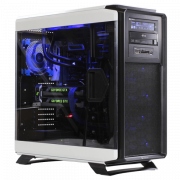
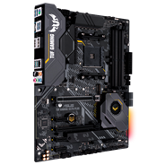

Montar seu próprio computador pode parecer um projeto desafiador, especialmente pela primeira vez. Você pode achar que é muito complexo, muito caro ou muito demorado, mas não precisa ser! Neste guia, explicaremos como construir um computador passo a passo. Primeiro vamos entender de que seu computador precisa, explorando as diferentes peças e orientando você no seu processo de montagem. Leia nosso guia para obter instruções fáceis de serem seguidas ou assista aos nossos vídeos de instalação para ver demonstrações visuais.
Como com qualquer coisa que se monta, entender o que se quer criar é geralmente a melhor forma de começar. Você pode ser um gamer obstinado que procura um computador personalizado feito para jogos, um estudante que faz pesquisas e edição ou alguém que usa o computador para as tarefas do dia a dia. Depois de saber qual computador deseja, você entenderá de que tipo de hardware e desempenho precisa. Dessa forma, poderá evitar pagar por coisas que não deseja.
O valor que você gasta com as peças de computador pode variar muito, por isso é uma boa ideia pensar em um orçamento realista com antecedência. Se busca o desempenho possível em todos os componentes do computador, prepare o bolso! Processadores mais rápidos custam mais do que os mais lentos, e gerações mais novas de memória e armazenamento com mais capacidade geralmente custam mais do que as mais antigas com menos recursos. Já que a memória e o armazenamento representam grande parte do custo de um novo computador, ao montar seu próprio PC, você tem flexibilidade para economizar nesses componentes. Apesar dos custos com RAM e SSD aumentarem de acordo com a quantidade da capacidade oferecida, eles podem ser mais baratos do que comprar componentes pré-instalados que são frequentemente inadequados e precisam ser atualizados rapidamente.
As cinco áreas de hardware que você precisa pesquisar para qualquer PC são:
Outros componentes, como o gabinete, o sistema operacional (SO), o monitor, o mouse, a fonte de alimentação e o teclado terão menos impacto no desempenho, mas não se esqueça de incluí-los em seu orçamento geral.
A parte da montagem é o momento em que tudo começa a ficar empolgante!
Depois de montar todo o sistema, é chegado o grande momento: ligar a máquina. Confirme se o monitor e o teclado estão conectados, e se tudo estiver funcionando corretamente, uma tela aparecerá para você entrar no sistema de entrada/saída básico, ou BIOS, do sistema. Se você tiver um disco ou unidade flash com um sistema operacional, coloque-o na unidade apropriada, inicialize, e você poderá instalar o sistema operacional. Parabéns, agora você montou seu próprio PC!